等級加標示與答對題數對照表
等級加標示與加權分數對照表
等級加標示與答對題數對照表
各科等級加標示人數百分比統計表
試題疑義
第一部分:選擇題 (1 ~ 25 題)
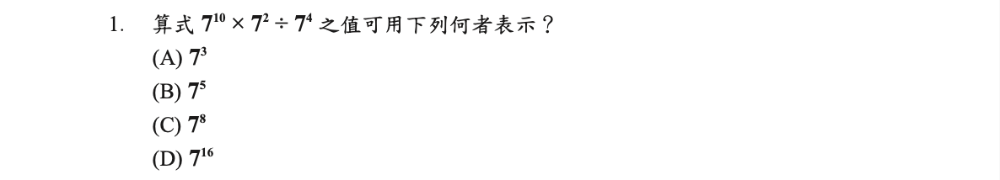
【通過率 0.75】
答案
(C)
詳解
\(\Rightarrow 7^{10+2-4}=7^8\)
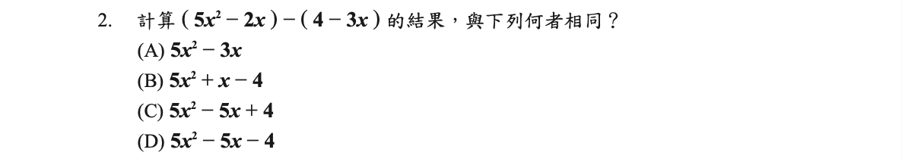
【通過率 0.82】
答案
(B)
詳解
\(\Rightarrow 5x^2-2x-4+3x=5x^2+x-4\)
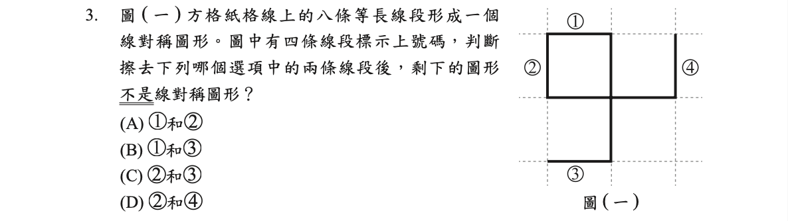
【通過率 0.88】
答案
(C)
詳解
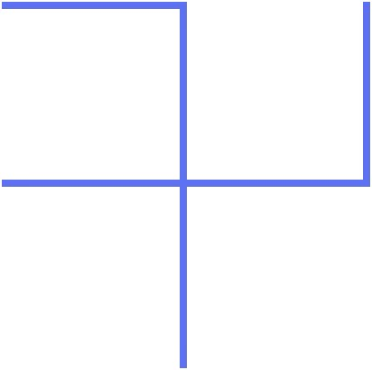
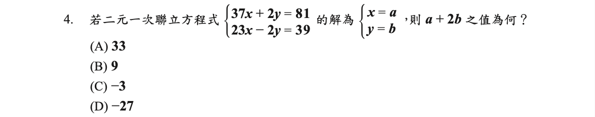
【通過率 0.77】
答案
(B)
詳解
兩式相加：
\(60x=120\)
\(\Rightarrow x=2\)
\(x=2\) 代入第一式：
\(\Rightarrow 2y=7\)
\(a+2b=x+2y=2+7=9\)
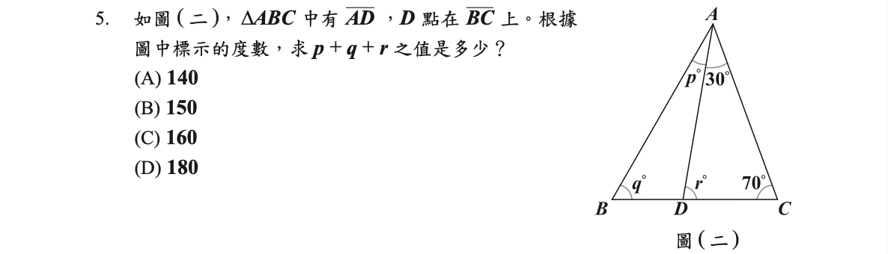
【通過率 0.82】
答案
(C)
詳解
\(p+q=r\) (三角形外角=兩內對角和) \(\therefore p+q+r=2r=2(180-30-70)=160\)
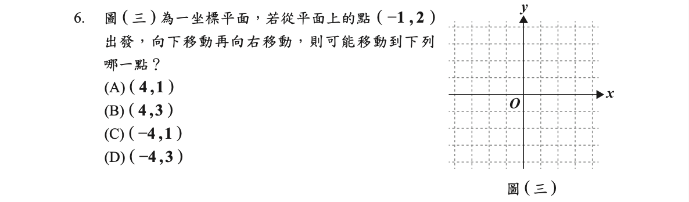
【通過率 0.77】
答案
(A)
詳解
向下移：\(y < 2\)
向右移：\(x > -1\)
所以選 \((4,1)\)
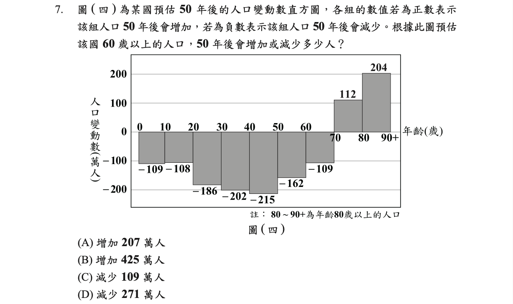
【通過率 0.78】
答案
(A)
詳解
60歲以上\(=(-109)+112+204=207\)
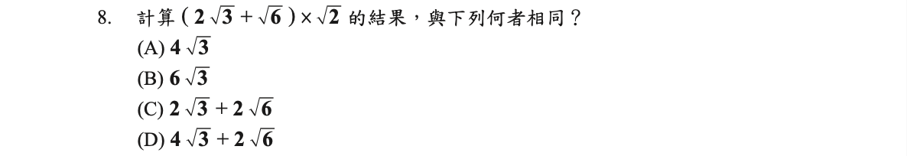
【通過率 0.75】
答案
(C)
詳解
\(\Rightarrow 2\sqrt3 \times \sqrt2+\sqrt6 \times \sqrt2\)
\(=2\sqrt6+2\sqrt3\)
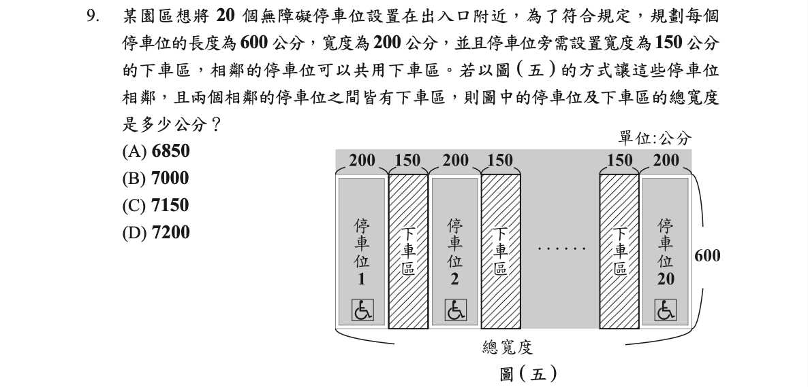
【通過率 0.72】
答案
(A)
詳解
下車區比停車位少一個
\(200\times 20+150\times (20-1)\)
\(=6850\)
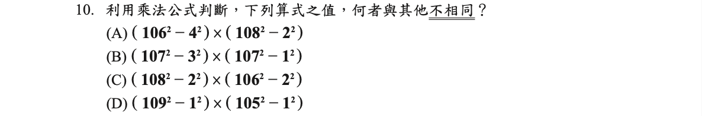
【通過率 0.58】
答案
(A)
詳解
- \(\Rightarrow (106+4)(106-4)\times (108+2)(108-2)\)
\(=120\times 102 \times 110\times 106\)
\(=102\times 106 \times 110\times 120\)- \(\Rightarrow (107+3)(107-3)\times (107+1)(107-1)\) \(=110\times 104 \times 108\times 106\)
\(=104\times 106 \times 108\times 110\)- \(\Rightarrow (108+2)(108-2)\times (106+2)(106-2)\) \(=110\times 106 \times 108\times 104\)
\(=104\times 106 \times 108\times 110\)- \(\Rightarrow (109+1)(109-1)\times (105+1)(105-1)\) \(=110\times 108 \times 106\times 104\)
\(=104\times 106 \times 108\times 110\)
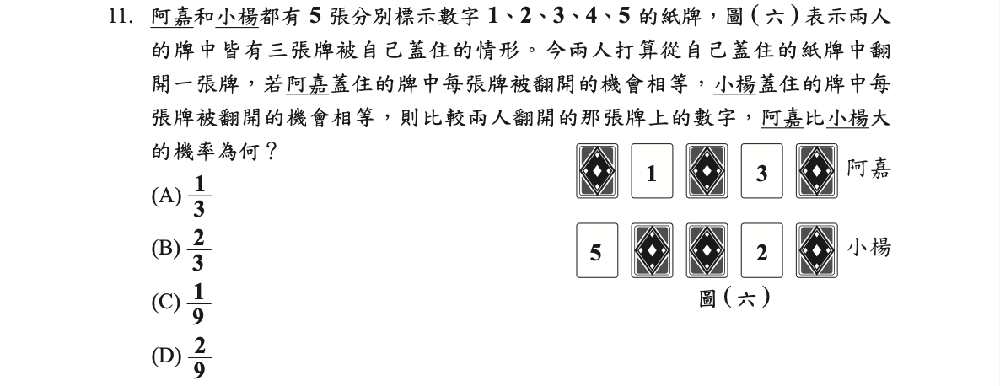
【通過率 0.72】
答案
(B)
詳解
阿嘉剩：\(2,4,5\)
小楊剩：\(1,3,4\)
(阿嘉,小楊)可能有 9 種：
\((2,1),(2,3),(2,4),(4,1),(4,3),(4,4),(5,1),(5,3),(5,4)\)
其中有 6 種阿嘉比較大：
\((2,1),(4,1),(4,3),(5,1),(5,3),(5,4)\)
\(\therefore \frac69=\frac23\)
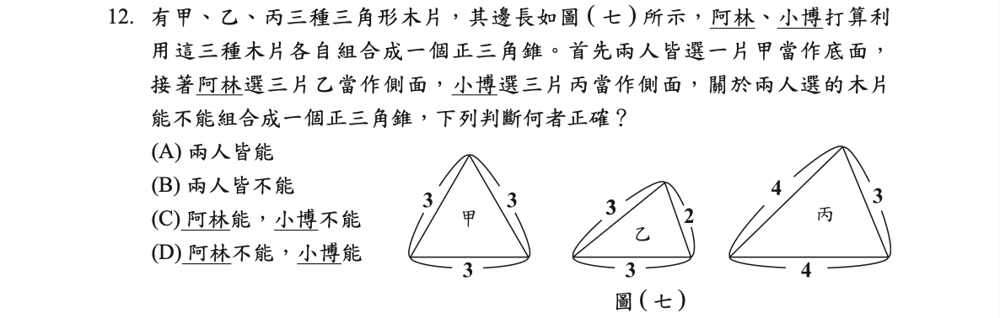
【通過率 0.66】
答案
(D)
詳解
正三角錐的側面為全等的等腰三角形，所以側邊要一樣長
乙以一邊 3 為底邊，另兩邊 2,3 不相等。
丙以一邊 3 為底邊，另兩邊 4,4 可為等腰。 所以阿林不能，小博能。
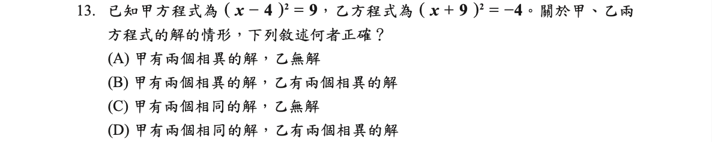
【通過率 0.61】
答案
(A)
詳解
甲：\(x-4=\pm3\therefore x=4\pm3=7,1\)
乙：\(x+9=\pm\sqrt{-4}\)，無解
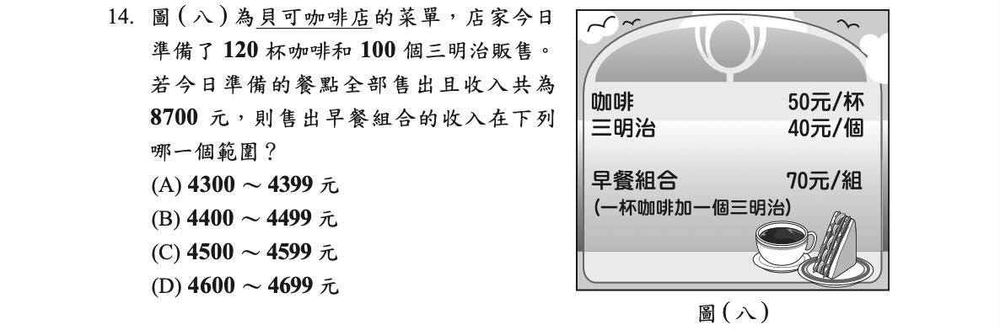
【通過率 0.56】
答案
(C)
詳解
設早餐組合售出 \(x\) 組，
咖啡售出 \(120-x\) 杯
三明治售出 \(100-x\) 個
\(50(120-x)+40(100-x)+70x=8700\)
\(\Rightarrow 6000-50x+4000-40x+70x=8700\)
\(\Rightarrow -20x=-1300\)
\(\Rightarrow x=65\)
\(70x=70\times 65=4550\)
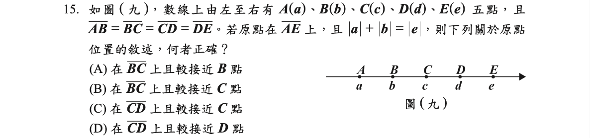
【通過率 0.60】
答案
(B)
詳解
設 \(\overline{AB}=\overline{BC}=\overline{CD}=\overline{DE}=1\)
(A) 若原點在 \(\overline{BC}\) 上接近 \(B\)
\(\Rightarrow 1<|a|<1.5\)
\(\Rightarrow 0<|b|<0.5\)
\(\Rightarrow 2.5<|e|<3\)
\(\Rightarrow 1<|a|+|b|<2\)
跟 \(|e|\) 的範圍沒有重疊
(B) 若原點在 \(\overline{BC}\) 上接近 \(C\)
\(\Rightarrow 1.5<|a|<2\)
\(\Rightarrow 0.5<|b|<1\)
\(\Rightarrow 2<|e|<2.5\)
\(\Rightarrow 2<|a|+|b|<3\)
跟 \(|e|\) 的範圍有重疊, 正確
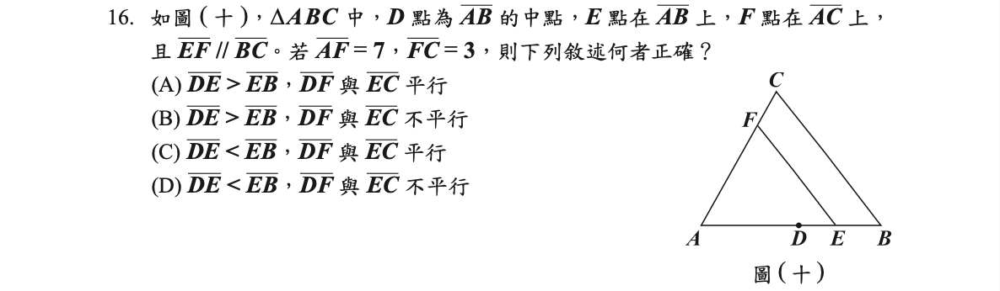
【通過率 0.50】
答案
(D)
詳解
\(\overline{EF}//\overline{BC}\Rightarrow \frac{\overline{AF}}{\overline{FC}}=\frac{\overline{AE}}{\overline{EB}}=\frac73\)
\(\Rightarrow 3\overline{AE}=7\overline{EB}\)
\(\Rightarrow 3(\overline{AD}+\overline{DE})=7\overline{EB}\)
\(\Rightarrow 3(\frac12\overline{AB}+\overline{DE})=7(\frac12\overline{AB}-\overline{DE})\)
\(\Rightarrow \overline{DE}=\frac15 \overline{AB}\)
\(\overline{EB}=\frac12\overline{AB}-\overline{DE}=\frac{3}{10}\overline{AB}\)
\(\therefore \overline{DE} < \overline{EB}\)
\(\overline{AD}:\overline{DE}=\frac12\overline{AB}:\frac15\overline{AB}=5:2\neq7:3\)
\(\therefore \overline{DF}\nparallel\overline{EC}\)
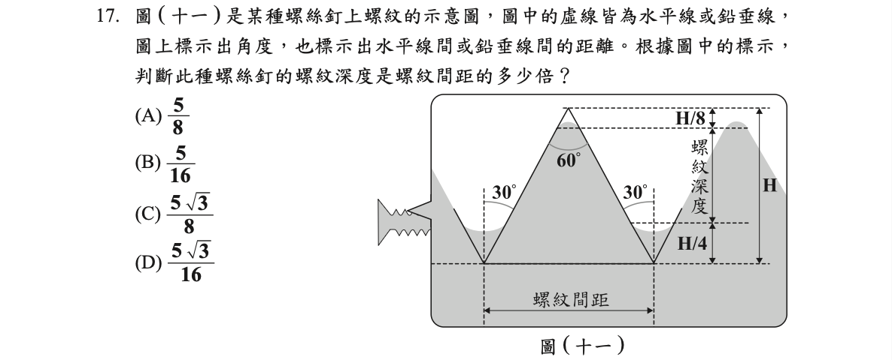
【通過率 0.51】
答案
(D)
詳解
設螺紋間距 \(a\), 為正三角形邊長
\(H\) 為正三角形的高
\(\Rightarrow H=\frac{\sqrt3}{2}a\)
螺紋深度 \(=H-\frac{H}8-\frac{H}4=\frac{5H}8\)
螺紋深度 \(\div\) 螺紋間距
\(=\frac{5H}8\div a\)
\(=\frac{5}8\times \frac{\sqrt3}{2}a\div a\)
\(=\frac{5\sqrt3}{16}\)
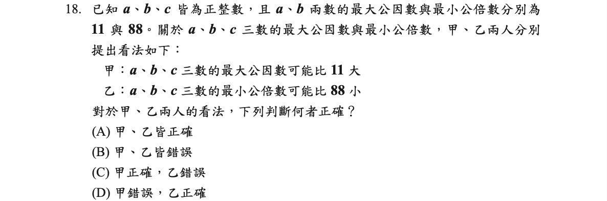
【通過率 0.44】
答案
(B)
詳解
\((a,b,c)\leq(a,b)\)
\([a,b,c]\geq[a,b]\)
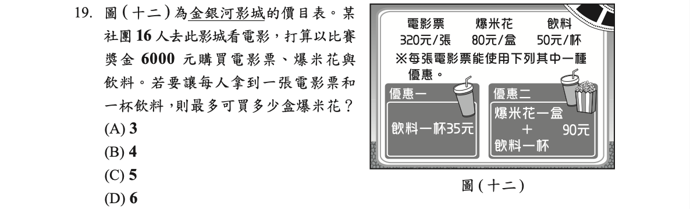
【通過率 0.48】
答案
(C)
詳解
設使用優惠一、優惠二各 \(x,y\) 張
\((320+35)x+(320+90)y=355x+410y\leq 6000\)
且 \(x+y=16\Rightarrow x=16-y\) 代入第一式
\(355(16-y)+410y\leq6000\)
\(\Rightarrow y\leq\frac{64}{11}\)
\(\therefore y\) 最大為 5
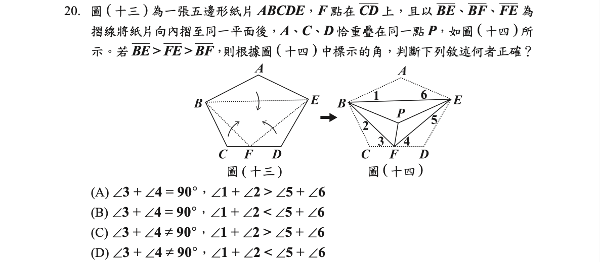
【通過率 0.35】
答案
(A)
詳解
\(\angle{BFP}=\angle3\),\(\angle{EFP}=\angle4\)
\(2(\angle3+\angle4)=180^{\circ}\)
\(\Rightarrow \angle3+\angle4=90^{\circ}\)
\(\because \overline{FE} > \overline{BF}\)
\(\therefore \angle{EBF} > \angle{BEF}\)
\(\Rightarrow \angle1+\angle2 > \angle5+\angle6\)
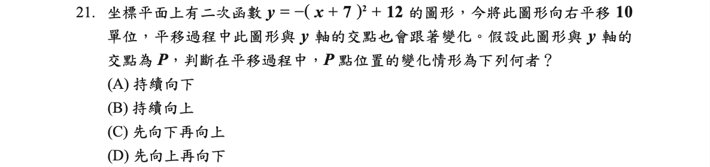
【通過率 0.44】
答案
(D)
詳解
頂點的 \(x\) 坐標為 \(-7\) 在 \(y\) 軸左邊
向右平移 10 單位後，頂點的 \(x\) 座標在 3
開口向下，與 \(y\) 軸交點從抛物線右邊移到左邊
所以先向上再向下
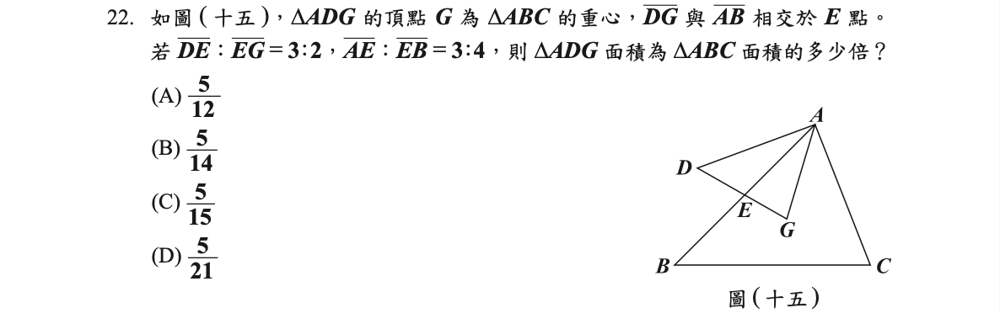
【通過率 0.33】
答案
(B)
詳解
\(\overline{DE}:\overline{EG}=3:2\Rightarrow\triangle{ADG}=\frac52\triangle{AEG}\)
\(\overline{AE}:\overline{EB}=3:4\)
\(\Rightarrow\triangle{AEG}=\frac37\triangle{ABG}=\frac37(\frac13\triangle{ABC})=\frac17\triangle{ABC}\)
\(\therefore \triangle{ADG}=\frac52(\frac17\triangle{ABC})=\frac{5}{14}\triangle{ABC}\)
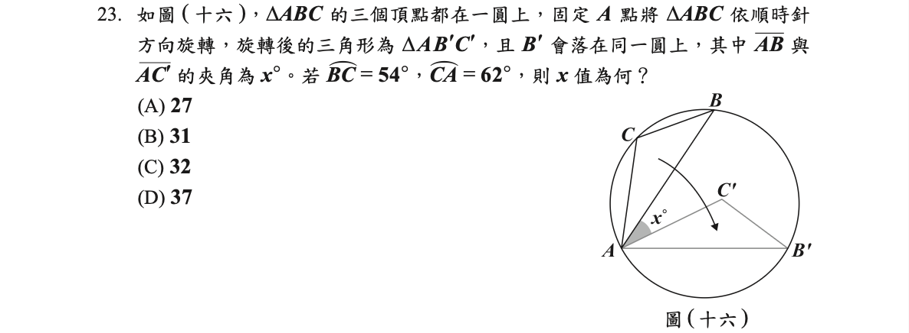
【通過率 0.30】
答案
(D)
詳解
\(\overset{\frown}{AB}=54^\circ+62^\circ=116^\circ=\overset{\frown}{AB'}\) (等弦對等弧)
\(\overset{\frown}{BB'}=360^\circ-2\times 116^\circ=128^\circ\)
\(\angle{BAB'}=\frac12 \overset{\frown}{BB'}=64^\circ\)
\(x=64^\circ-\angle{B'AC'}\)
\(=64^\circ-\frac12\overset{\frown}{BC}\)
\(=64^\circ-27^\circ\)
\(=37^\circ\)
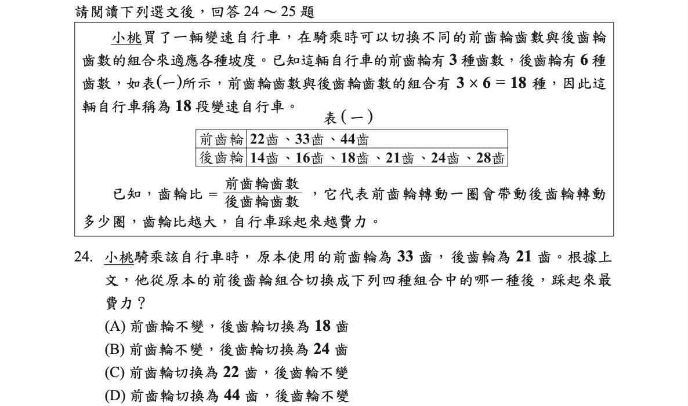
【通過率 0.72】
答案
(D)
詳解
齒輪比愈大愈費力
(A) \(\frac{33}{18}\)
(B) \(\frac{33}{24}\)
(C) \(\frac{22}{21}\)
(D) \(\frac{44}{21}\) 最大
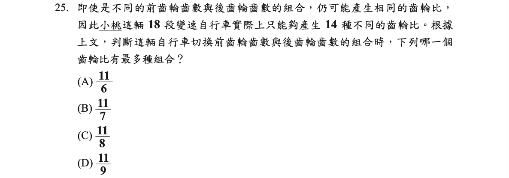
【通過率 0.59】
答案
(B)
詳解
- \(\frac{11}{6}\) 有 \(\frac{33}{18}\), \(\frac{44}{24}\) 共 2 種
- \(\frac{11}{7}\) 有 \(\frac{22}{14}\), \(\frac{33}{21}\), \(\frac{44}{28}\) 共 3 種
- \(\frac{11}{8}\) 有 \(\frac{22}{16}\), \(\frac{33}{24}\) 共 2 種
- \(\frac{11}{9}\) 有 \(\frac{22}{18}\) 共 1 種
第二部分:非選擇題 (1 ~ 2 題 )
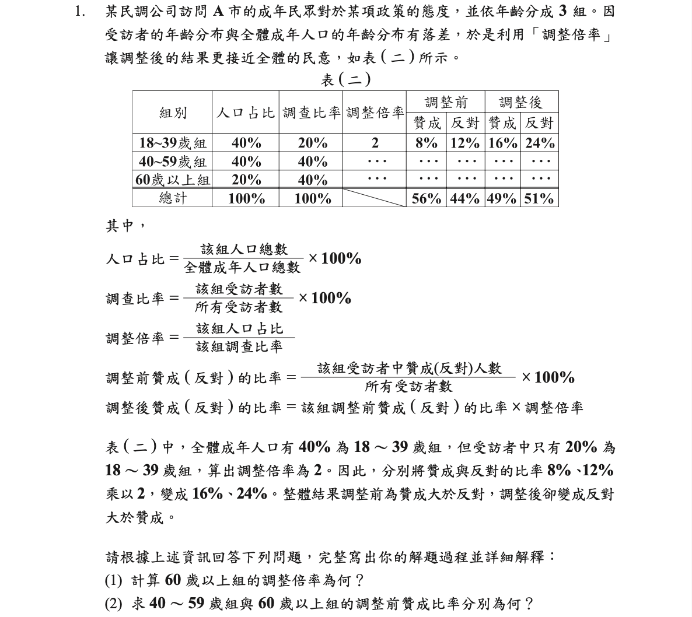
答案
- \(\frac12\) (2)18, 30
詳解
- \(\frac{20%}{40%}=\frac12\)
- 設 40～59歲與60歲以上調整前贊成比率分別為 \(a, b\)
40~59歲的調整倍率 \(=\frac{40%}{40%}=1\)
調整前：\(a+b=56-8=48\)
調整後：\(a+\frac12 b=49-16=33\)
\(\Rightarrow a=18, b=30\)
答：（1）\(\frac12\) (2) 18, 30
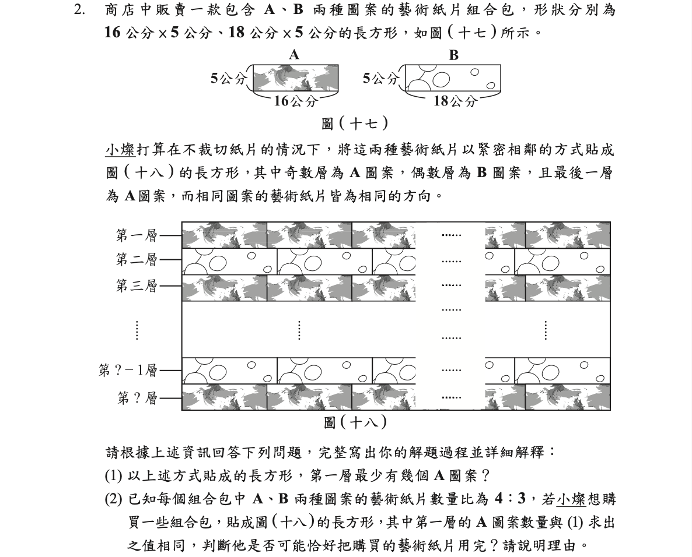
答案
- 9個
- 否
詳解
- \((16,18)=144\)
\(144\div 16=9\)
- B 一層需 \(144\div 18=8\) 張
A 比 B 多一層，設共有 \(2x+1\) 層
\(\Rightarrow 9(x+1):8x=4:3\)
\(\Rightarrow 27x+27=32x\)
\(\Rightarrow x=\frac{27}5\) （不合）
答：（1）9 張 (2) 否